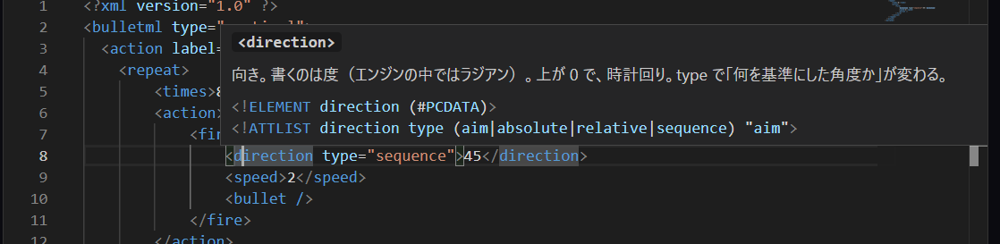
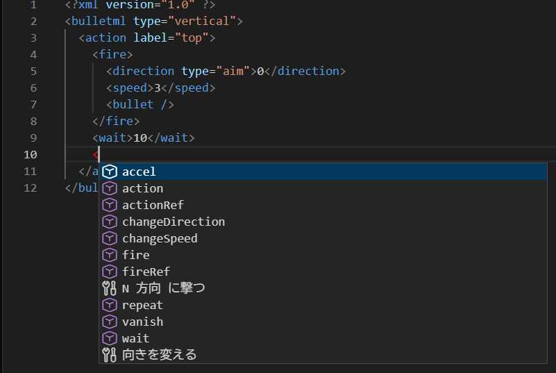
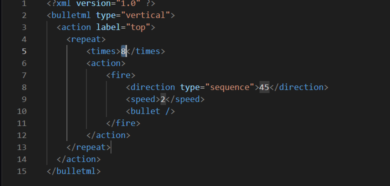
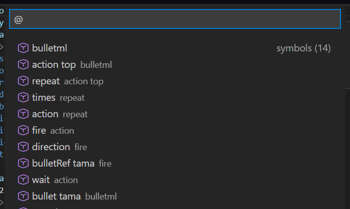
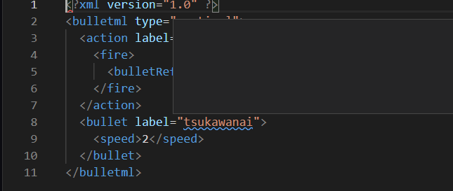
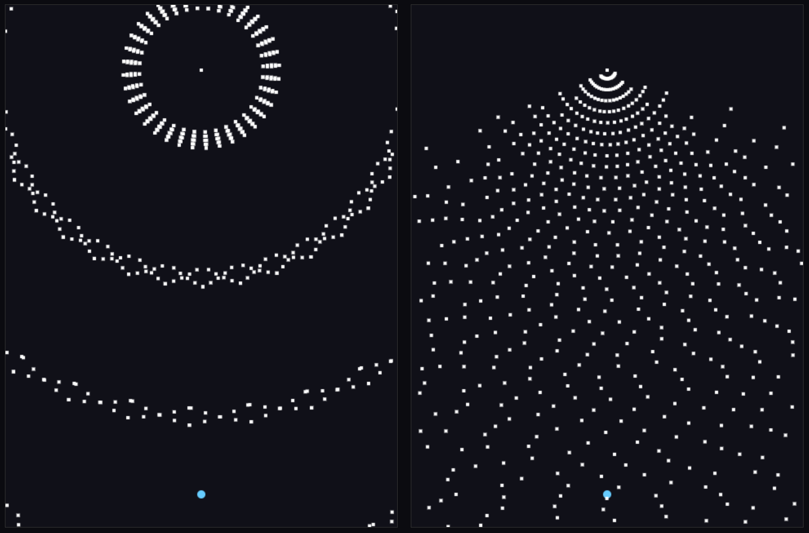
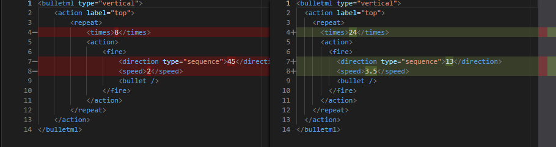

はじめに
候補は BulletML の DTD から出しているので、その場所に置けるものしか出ない。
打っている途中で本文が壊れていても止まらない。
表記のプルダウンで XML・sxml・fsb・F# の CE を切り替える。
はじめの 3 つ は語彙が同じで、変わるのは書き方だけ ——
XML の <fire label="a"> が
sxml では (fire (@ (label "a")))、
fsb では fire label="a"（入れ子は行頭の空白で決まる）。
切り替えると、いまの本文がその表記に書き直される。
プルダウンの弾幕を読み直すのではなくいまの本文を変換するので、
自分で足した字も残る。読めない本文のときは触らずに理由が出る。
F# の CE でも 4 表記 と同じものが出る。
書くのは要素名ではなく DSL の名前（top / defAction /
actionRef）で、置ける場所が入れ子で決まる ——
候補はその場所に置けるものだけを出す。
repeat の中は action の中と同じものが置ける。
hover は CE でも出る。 名前の上に置くと、
それが BulletML の何を作るかと、その仕様が出る ——
defAction なら <action>、
aim なら <direction> と
type="aim" の 2 つ。
vertical のように2 つ の意味を持つ名前は両方出る
（根の画面の向きと、accel の中の縦の加速度）。
文字列やコメントの中では出ない。

direction の上。説明のあとに DTD の宣言そのものが出る ——
置ける属性と既定値が、仕様の字で読める
4 つ の表記が全部 書けて、hover は 4 つ とも出る。
候補・F2・F12・Ctrl+.・
アウトライン・折りたたみは 4 表記 とも出る。
書く
| 打つ（XML / sxml / fsb） | 出るもの |
|---|
< / (
fsb は字下げのあとに 1 文字（始まりの記号が無い） |
そこに置ける要素。action の中なら fire や wait、
fire の中なら direction や bullet |
| 続けて何文字か |
絞り込み。確定すると <fire> / (fire) /
fire のように入る |
タグの中で空白＋何文字か
(@ ( に続けて何文字か
fsb は名前の後ろで空白＋何文字か |
属性名。確定すると type="" / (type "") まで入って、
カーソルが引用符の中に来る |
" |
属性値。type なら aim / absolute /
relative / sequence |
$ に続けて何文字か |
$rand と $rank。wait や speed のように
中身に式を書ける要素の中だけ |
| Ctrl+Space |
どこでも明示的に出す。空白を打っただけでは出ないので、属性名はこれが早い |

<action> の中で < を打ったところ。
要素と雛形が同じ窓に並ぶ（印が違う）
雛形
候補は「その場所に置ける要素」を出すが、
「N 方向 に撃つ」のような形は要素 1 つ では出ない。
そこを埋めるのが雛形で、骨ごと入る ——
<action> の中で 6 つ、<bulletml> の直下 で 2 つ。
- N 方向 に撃つ ——
repeat ＋
direction type="sequence"
- 自機を狙って撃つ / 決めてある弾を撃つ /
待つ / 速さを変える / 向きを変える
<bulletml> の直下 では
撃ち始める（top）と撃って消える弾
穴には既定値が入っている。 Tab で次の穴へ移る ——
埋めずに走らせても弾幕として成り立つ
（$1 は BulletML の式として正しく読めてしまうので、
空の穴を作っていない）。

「N 方向 に撃つ」を選んだ直後。8 方向・45 度 が入っているので、
そのまま Apply しても走る
欄そのもの
- Ctrl＋ホイールで欄の字が拡大縮小する（VS Code と同じ）。
拡大率は Apply でも Reset でも戻らない
- 配色は欄の見た目だけを替える。
弾幕にも本文にも触らない（速さと同じで見る側の都合）。
Monaco が素で持っている 4 本 —— 暗い・明るいと、
その高コントラスト版（HC）
- 検索（Ctrl+F）・
取り消し（Ctrl+Z）はエディタの標準機能
たどる
名前を追う
- Ctrl+. は綴りの直し方を出す。
actionRef label="tp" のように指す先が無いとき、
1 文字 違いの定義が在れば「tp を top に直す」が出る。
近い名前が無ければ何も出ない（当てずっぽうを出さない）。
波線が消えていても出る
- F2 は
label の名前をまとめて変える。
action label="a" の上でも actionRef label="a" の上でも、
その名前の書いてあるところが全部 変わる。
action と bullet のように別の種類は巻き込まない
- F12 は その名前を決めているところへ飛ぶ。
Shift+F12 は書いてあるところを全部 並べる。
どちらも F2 と同じ 1 本 の上に載っている ——
決めているところが無ければ飛ばない（そこは波線と
Ctrl+. の担当）
形を見る
- Alt+O はどこに何が在るかを並べる。
打った字から数えるので Apply を待たない。
Ctrl+Shift+O でも出る ——
ただしその組み合わせはページの外に持ち主が居ることがある
（常駐ソフトの割り当てや、Chrome の「ブックマーク マネージャ」）。
取られるとここまで届かないので、出ないときは Alt+O。
入れ子のまま出て、
label の付いたものは名前も添う。
- 入れ子の知り方は表記ごとに違う（閉じ札・括弧の対・字下げ）が、
同梱 176 本 とも 3 表記 で同じ木になった ——
だから表記を切り替えても並びは変わらない
- F# の CE だけは
{ } の段を見るので、別の木になる
（176 本 中 145 本 で違う）。そちらが正しい ——
見ているのが要素の入れ子ではなく CE の本文なので
- 折りたたみも同じ木に載っている。
畳む範囲はその要素の中身が終わるところまで ——
閉じ札が在る表記ではその行まで、無い表記では中身の最後の行まで。
親の閉じ札は巻き込まない。
1 行 に収まっているものは畳む先が無いので出ない
- Shift+Alt+→ は
囲んでいる要素まで選択を広げる。
押すたびに 1 段 ずつ外へ出て、Shift+Alt+←
で 1 段 戻る。
字下げは選ばない —— 始まりは要素の名前から。
アウトライン・折りたたみと同じ 1 本 の上に載っている

Alt+O。入れ子のままで、
action top のように名前が添う。
右の symbols (14) が数
走らせる
- Apply を押すと、書いたものが弾幕に反映される。
打つたびには反映しない（見ている弾幕が最初に戻ってしまうため）
- 読めなければ Apply したときに下のバーへ理由が出て、分かる位置には波線が付く
- 読めて・組めても走らないものは、打った時点で波線が付く
（Apply を待たない）。字から数えているので、
いちばん長い弾幕でも 0.5 ミリ秒。3 種類 出る。
- 赤 ——
top で始まる名前の定義が 1 つ も無い。
読めて・組めて、黙って何も起きない（走らせる側が
top で始まる名前を探すので）
- 黄 ——
◯◯Ref が指す名前の定義が無い。
Apply は通る —— 解けない参照は黙って無視されるだけなので、
書いたつもりのものが出ない
- 青 —— どこからも呼ばれていない定義。
走りには影響しない（同梱 176 本 にも 6 件 在る）

3 色 が同時に出た本文。どれも「読めて・組める」 ——
top が無く（赤）、nai の定義が無く（黄）、
tsukawanai が呼ばれていない（青）
時間
- Reset はいま載っている弾幕を最初から。欄の文字は触らない
- Frame は載せてから進めたコマ数。Apply や Reset、
弾幕の選び直しで 0 に戻る
- 飛ぶ はそのコマまで進めて止まる（1 コマ 送りと同じ）。
押しても画面は固まらない —— 重い弾幕だと着くまで何秒か かかるので、
進んでいることは Frame の数で分かる。Play を押せばそこでやめる。
いまより手前のコマを指すと最初から進め直す（面は逆再生できない）。
そのとき乱数も引き直すので、
$rand を使う弾幕は
さっき見た絵と同じにならない
走らせ方の軸
- 難度は
$rank（0 から 1）。
同梱 176 本 のうち 173 本 が使う軸で、
0 と 1 に振ると 171 本 で走りが変わる（弾数が数倍 になるものも在る）。
動かすと弾幕は最初から走り直す —— $rank は
木を組む段で焼き込まれるので、走っている面には効かない
- 種は
$rand の並びを決める。
同じ種なら同じ走りで、振 を押すと別の走りになる。
Reset で頭に戻しても同じ絵をもう一度見られる
- 自機は狙い弾（
type="aim"）の基準。
176 本 のうち 103 本 が狙いを使うので、
どこに置くかで絵そのものが変わる。
追うはマウス、止めるは定位置、
回るは定位置のまわりを 240 コマ かけて 1 周。
回るのはコマ数だけで決まるので、
同じ種・同じ難度なら同じ絵になる
面
- 面の向きは弾幕が決める。
<bulletml type="horizontal"> と書いてあれば横長の面になり、
敵が右・自機が左に置かれる。同梱 176 本 のうち 9 本 がこれ。
面を回すのではない —— 横画面の弾幕は座標のとり方はそのままに
左の側へ撃つように書かれているので、自機を左に置けば絵が成り立つ。
書いていなければ縦の面（vertical と同じ）
- 軌跡 は通った跡を残す。過去の位置は覚えていない ——
面を薄く塗り重ねているだけなので、放っておけば消える。
塗り重ねる先は面ぜんぶなので、自機の跡も残る
並べて比べる
- 2 面で、もう 1 つ の弾幕を隣に並べて同じコマで走らせる。
難度・種・自機は 2 つ で共通なので、違うのは弾幕だけ。
乱数は面ごとに分けてあるので、
並べても 1 面 で見たときと同じ絵になる（並べたら絵が変わる、では比べられない）。
弾数は
1 面 / 2 面 の形で出る。
面の向きは弾幕ごとなので、片方 だけ横長になることがある

同じコマの 2 面。難度・種・自機は共通なので、
絵の違いは弾幕の違いだけ
- 比べるは、欄を 2 面 に入れ替えて並べる。
並べているあいだは読むだけで、直すのは「しない」に
戻してから。左右 とも F12 と hover は効く。
- 走っている弾幕と —— 左がいま走っているもの、
右が編集中の本文。Apply する前に何を変えたかが見える。
同じ表記どうしなので、赤と緑が意味を持つ
- ◯◯ と —— いまの本文をその表記へ変換したものが左。
赤と緑は意味を持たない（書き方が違えば全行 が違う）——
同じ弾幕が別の書き方でどう見えるかを、並べて読むための出し方
表記そのものを切り替えると、比べる先は「しない」に戻る
（自分とは比べられないので）

「走っている弾幕と」。左が走っているもの、右が欄の字 ——
Apply していない 3 行が色で出る
出し入れ
- プルダウンで同梱の弾幕を選ぶと、その弾幕が欄に入る。
表記は変わらない —— sxml で読んでいれば sxml で入る。
並びは 2 つ に分かれていて、後ろは
BulletML 公式配布のサンプル 17 本
（同梱とは別の集合。
[Progear] のように
もとのファイル名で出る）
- Open は名前で表記を決める。
.sxml を開けば sxml、
.fsb なら fsb、.fsx なら F# の CE に切り替わる
- Save はその対。いま欄に在る字をそのまま落とす ——
読めない書きかけでも落とせる。拡張子は表記から付くので、
落としたものを Open すると同じ表記に戻る
- 整形 は読んで同じ表記で書き直す。
コメントは残らない（木がコメントを持たないので、
読んだ時点で落ちる）。だから字が変わるときは 1 回 目 で知らせて、
もう一度 押すと入れ替える。
知らせたあとに打つと、待っているものは消える
- Share はいまの本文をそのまま URL にする。
アドレス欄がその字になり、コピーもされる。
サーバへは送られない（
# の後ろに載るので、
置いてあるところからは中身が見えない）。
表記も一緒に載るので、開いた側は同じ表記で読む。
難度と種も載る —— 同じ本文でも走らせ方が違えば別の絵なので、
リンクが指しているのは「その走り」。
版が違うリンクや壊れた字は「読めない」と出る（黙って空にしない）
キーだけで動かす
- Tab で操作を順に回る。24 か所 が輪に入っていて、
そのうち 23 か所 が口（残り 1 つ が下の欄）。
並びは画面のとおり —— 上の列 6 個 -> 欄 -> 下の列 17 個
- Tab を 7 回 押すと欄に入り、そこで止まる。
欄の中では Tab が字下げになるので、
下の列 17 個 へは Tab だけでは進めない。
Ctrl+M を 1 回 押すと Tab が
外へ抜ける側に切り替わる。もう一度 押すと字下げに戻る
- Esc は出ている窓を閉じる（候補・検索・名前の変更）。
欄からは出ない —— 出るのは上の Ctrl+M。
この窓も Esc で閉じる。
右上 の × と、窓の外 を押しても閉じる
（閉じ口は 3 本）
- いまどこに居るかは青い枠で出る。
キーで来たときだけ光り、クリックでは光らない
- この窓の中も Tab で回る。
閉じるのあとに章の札が 6 つ 並んでいて、
Enter か Space で開く ——
窓を閉じているあいだ、ここは輪に入らない
（上の 24 か所 に入っていないのはそのため）